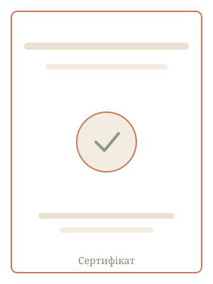

01
Знайомство
Перша зустріч — щоб познайомитися, зрозуміти ваш запит і відчути, чи нам комфортно працювати разом. Без зобов'язань.
Дипломована психологиня · Онлайн
Мене звати Рімма. Я допомагаю дорослим людям прожити складні періоди, повернути внутрішню опору й знайти сили рухатися далі — у теплій, безпечній і безоціночній атмосфері.
Трохи про те, хто поруч із вами
Вітаю! Я сертифікована клінічна психологиня, магістр психології. У своїй практиці я допомагаю людям долати вигорання, тривожність, життєві кризи та шукати внутрішню опору у складні часи.
Для мене психологія — це про повернення до себе справжнього. У роботі з людьми для мене найважливіше створити безпечний, дбайливий простір, де немає місця оцінкам чи засудженню, а є повага до вашого особистого темпу, щирість та глибоке прийняття вашого досвіду.
Жодного тиску й «правильних» відповідей. Ми рухаємося у вашому темпі, крок за кроком.
Перша зустріч — щоб познайомитися, зрозуміти ваш запит і відчути, чи нам комфортно працювати разом. Без зобов'язань.
Регулярні сесії, де ми дбайливо досліджуємо те, що турбує, і знаходимо інструменти, які працюють саме для вас.
Поступово ви відновлюєте внутрішній ресурс і впевненість, щоб далі спиратися на себе — уже самостійно.
Якщо ви впізнали себе — ви в правильному місці.
Особиста зустріч онлайн, повністю присвячена вам і вашому запиту. Конфіденційно та у безпечній атмосфері.
ЗаписатисяАнонімні онлайн-зустрічі у дружній атмосфері, які модерує дипломована психологиня. Простір, де можна говорити про те, що болить.
ДокладнішеАвторський проєкт
Простір для спільного розвитку, де кожен може відверто говорити про свій ментальний стан, знаходити однодумців і відновлювати внутрішній ресурс. Тут не потрібно називати справжнє ім'я, вмикати камеру чи виправдовувати чиїсь очікування.
Психолог готує конкретну тему, ділиться дієвими техніками, практиками самодопомоги та корисними інструментами. Поєднання теорії, обговорення й практичних вправ.
Живий діалог і розбір того, що турбує саме вас. Запитання можна поставити на зустрічі або залишити заздалегідь анонімно.
Приєднатися можна в один клік, без реєстрації та створення профілю.
Ви самі обираєте нікнейм перед входом у кімнату.
Вмикати відео чи говорити голосом — тільки за вашим бажанням.
Формат відкритої групи підтримки не замінює індивідуальну психотерапію чи медичну допомогу.
Зустрічі проходять по вихідних. Формати чергуються — тематичні заняття та Q&A. Долучайтеся до зручної для вас.
Актуальний розклад і теми ми публікуємо у Telegram-спільноті.
Для сором'язливих 🤍
Є питання, яке складно поставити вголос? Напишіть його анонімно — і ми разом розберемо його на найближчій Q&A-зустрічі. Не треба вказувати ім'я чи контакти.
Моя кваліфікація підтверджена дипломами та сертифікатами. Натисніть, щоб переглянути.

[Назва сертифіката / навчання] [Назва сертифіката / навчання] [Назва сертифіката / навчання] [Назва сертифіката / навчання]
Додайте зображення у теку assets/certs/ і замініть посилання вище.
Анонімно, з дозволу клієнтів.
«[Текст відгуку. Наприклад: вперше за довгий час я відчула, що мене чують без осуду. Дякую за безпечний простір.]»
«[Текст відгуку про індивідуальну роботу.]»
«[Ще один короткий відгук.]»
Так. Усе, що відбувається на консультації чи у групі, залишається між нами. Конфіденційність — основа нашої роботи.
Онлайн у Zoom, триває 50–60 хвилин. Ми спілкуємося у комфортному для вас темпі, без тиску й «правильних» відповідей.
[Вкажіть вартість або «за запитом». За потреби — інформація про першу ознайомчу зустріч.]
Група — це безкоштовний простір підтримки та спільноти. Вона не замінює індивідуальну психотерапію чи медичну допомогу.
Ні. Ви самі обираєте нікнейм, а камеру й мікрофон вмикаєте лише за власним бажанням.
Українською.
Напишіть мені — і ми оберемо зручний час. Перший крок часто найважчий, і я поруч.
Хвилинка для себе
Коли тривожно — допомагає сповільнити дихання. Слідкуйте за колом: вдихайте, коли воно росте, і видихайте, коли зменшується.
Техніка квадратного дихання: вдих 4 · затримка 4 · видих 4 · пауза 4